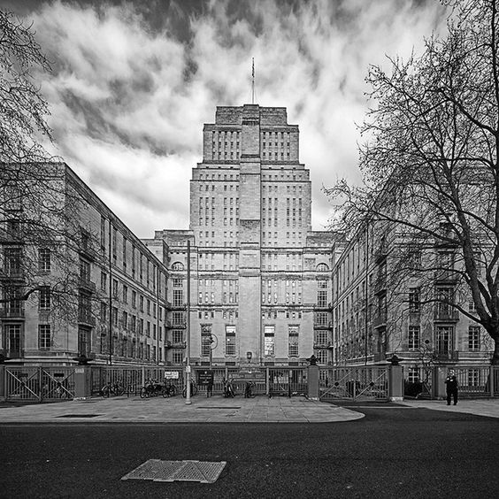
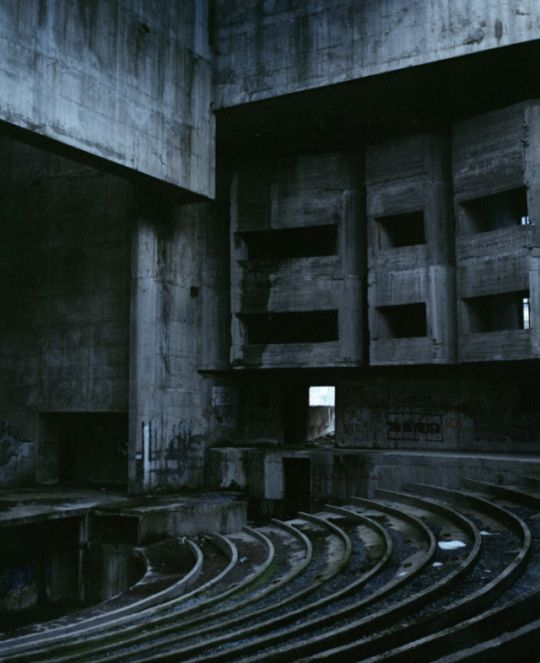

Acerca de los ministerios
Los ministerios en el libro "1984" de George Orwell son como oscuros titanes, monumentos siniestros de un Estado totalitario que asfixia la libertad y la verdad. El Ministerio de la Verdad falsifica el pasado, el Ministerio del Amor tortura y destruye a quienes se atreven a disentir, el Ministerio de la Abundancia promueve la escasez como abundancia, y el Ministerio de la Paz perpetua la guerra. Estas instituciones son la encarnación del control absoluto, donde la realidad es manipulada, la verdad es reescrita y la lealtad al Gran Hermano es forzada a través de la brutalidad y el miedo. Su sombría presencia y su maquinaria de represión inquietan hasta los cimientos de la conciencia, convirtiendo la vida en una pesadilla en la que el individuo se disuelve en la abrumadora maquinaria del Estado.
Ministerio de la Abundancia
Este ministerio es una entidad que encarna una cruel paradoja. En medio de un mundo de escasez y privación, este siniestro ministerio es responsable de la administración de la penuria y la manipulación de la pobreza. Sus pasillos oscuros y opresivos son testigos de un juego macabro en el que la hambruna es fabricada, la escasez es promovida y la desigualdad es mantenida. En un mundo donde la miseria es la norma, el Ministerio de la Abundancia actúa como un sádico titiritero, jugando con la necesidad de las masas mientras el Partido mantiene un férreo control sobre cada miga de alimento y cada gota de agua. Su mera existencia es un recordatorio inquietante de la crueldad del poder totalitario, donde la abundancia es solo una ilusión, y la verdadera riqueza se encuentra en el control absoluto sobre la necesidad humana.
Ministerio de la Paz
El Ministerio de la Paz es una manifestación retorcida de la ironía y la manipulación del poder totalitario. Aunque su nombre insinúa la promoción de la paz, este ministerio es en realidad el motor de la guerra perpetua. Sus pasillos fríos y austeros albergan una maquinaria de conflicto implacable, donde la paz es solo una ilusión utilizada como herramienta de control. En un mundo donde la guerra es constante, el Ministerio de la Paz es el arquitecto de la destrucción y la agresión, perpetuando el miedo y la obediencia en la población. Su sombría presencia subraya la hipocresía del Partido, donde la paz es la guerra, la libertad es la esclavitud y la ignorancia es la fuerza, en una danza maquiavélica de manipulación de la realidad que sume a la humanidad en un estado constante de sufrimiento y desesperación.
Ministerio de la Verdad
Representa un lugar siniestro donde la verdad es torturada, retorcida y asesinada en manos del Partido. Sus paredes frías y su atmósfera claustrofóbica ocultan una maquinaria de propaganda y manipulación despiadada. Allí, la historia es reescrita para servir a los intereses del Partido, la verdad se convierte en mentira y la mentira en verdad. Los ciudadanos son sometidos a una constante inundación de información falsa, y cualquier desviación del pensamiento ortodoxo es castigada con brutalidad. El Ministerio de la Verdad es el epicentro de la distorsión de la realidad, donde el lenguaje es utilizado como arma y la memoria de la verdad es destruida en el crisol de la ideología del Partido. Su ominosa presencia es un recordatorio inquietante de cómo el poder totalitario puede manipular y controlar la percepción de la realidad, convirtiendo la verdad en una víctima silenciosa de la opresión.
Ministerio del amor
En esta novela, todos los ministerios son importantes para el control y el funcionamiento del Estado totalitario, pero uno de los más brutales y cruciales es el Ministerio del Amor. Este ministerio se encarga de la represión, la tortura y la eliminación de cualquier forma de disidencia o pensamiento considerado peligroso para el Partido. El Ministerio del Amor es el centro de la crueldad y la brutalidad en la sociedad distópica de "1984". Es donde los ciudadanos que son arrestados por crímenes políticos o ideológicos son llevados para ser interrogados y reeducados. Las técnicas de tortura utilizadas en el Ministerio del Amor son horribles y diseñadas para forzar la sumisión total a la ideología del Partido y al Gran Hermano.